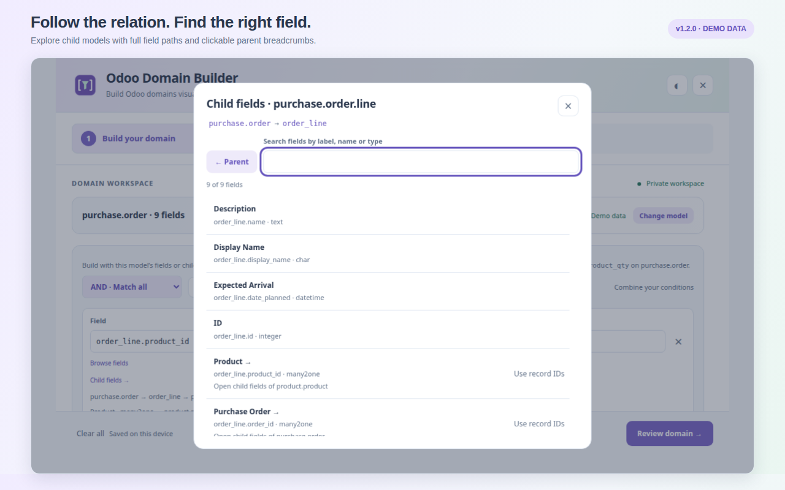
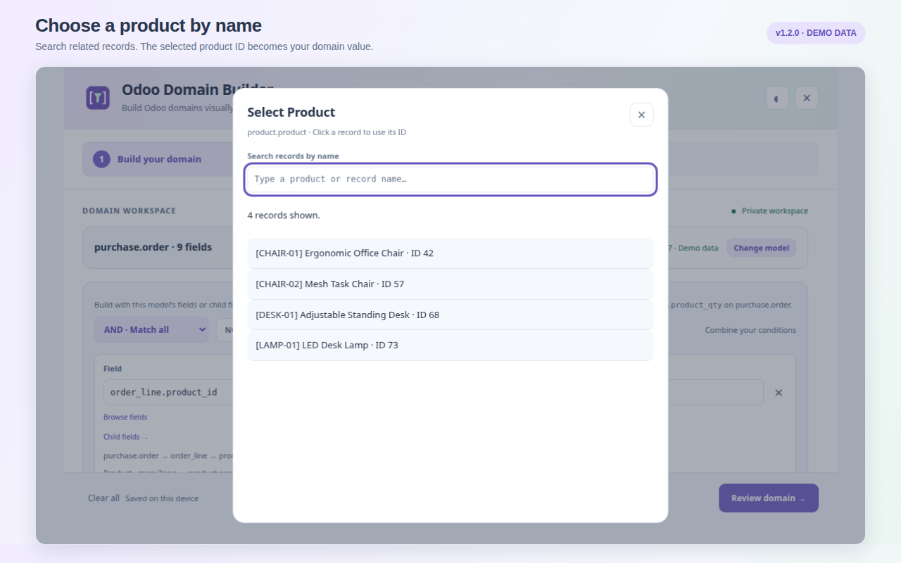
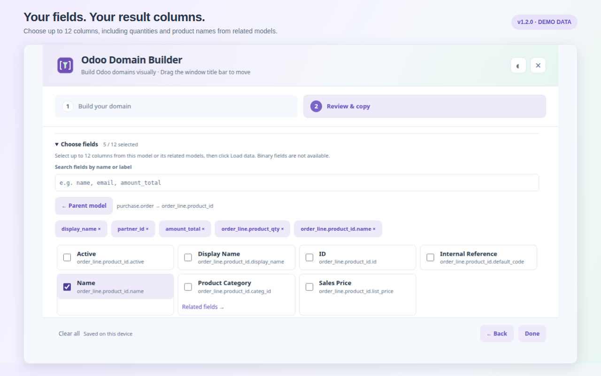
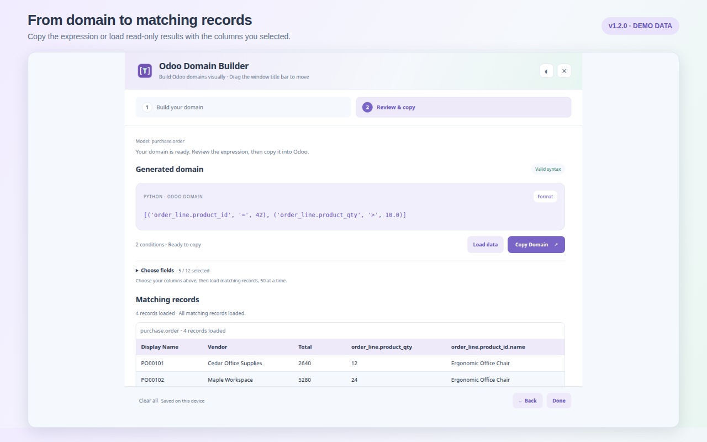

Search models by label or technical name through ir.model — including custom models — with paginated results and live server search.
What is Odoo Domain Builder?
A focused developer tool that turns writing Odoo domain expressions into a visual, error-resistant workflow.
Odoo filters — the values of domain attributes on actions, views, and server code — are plain Python-ish lists such as [('state', '=', 'draft')]. Learning the exact technical field names and operators for every model is tedious and error prone.
Odoo Domain Builder connects to your logged-in Odoo session and loads the real field metadata your account can see. You pick a model, browse its fields (searchable, along dotted relation paths), set operators and values with type-aware inputs, and get a ready-to-paste expression.
The domain is generated entirely on your device. Click Load data on Review & Copy to send the domain to your selected Odoo server and preview matching records. Records are never changed.
Connect in seconds and produce expressions like:
[('partner_id.country_id.code', '=', 'BD')]or with multiple conditions and groups:
[('state', '=', 'draft'), '&', ('active', '=', True), ('amount_total', '>', 100.0)]Ideal for Odoo developers, technical consultants, functional consultants, and implementers who work with Odoo filters and domain syntax every day. This install is a Manifest V3 Firefox add-on with an event-page background.
Key features
Local syntax and value checks use your model metadata. Record searches and previews follow your Odoo access rights.
Load every field fields_get exposes to your account, including custom and inherited fields. Non-searchable fields are clearly marked.
Drill into many2one, one2many, and many2many relations up to eight levels and build dotted paths like partner_id.country_id.code.
Selection dropdowns plus validated boolean, integer, float/monetary, date, and UTC datetime inputs. Related fields can select records by name and insert their IDs.
Comparisons, membership (in / not in), text matching (ilike, =like, …), and hierarchy operators (child_of, parent_of).
Combine conditions with AND / OR / NOT, up to five nested group levels and 100 conditions, with inline error reporting.
Preview the generated domain, switch between compact and formatted output, and copy it to your clipboard in one click.
Drafts, model context, and your light/dark theme preference are saved in local add-on storage and restored on reopen.
Search products or other related records and insert their IDs automatically. List values support multiple selections.
Read matching records in 50-row pages, then use Load more. Records are never modified.
Select up to 12 columns, including child-model fields. Multiple related values appear together in each main-model row.
No Odoo connection? Build domains with manual fields, operators, and values with full syntax and logical-structure validation.
Screenshots
Version 1.1.0: child fields → product selection → chosen columns → matching data. Screenshots show the actual interface with fictional demo metadata and records.




Tip: Open the wizard by logging in to Odoo in a tab, then clicking the toolbar icon in that tab. Drag the title bar to move the window, and click the × or Done to close it.
Install in Firefox
Firefox 140 or newer is required. The recommended path is installing from Add-ons for Firefox (AMO); for development you can load the add-on temporarily.
Install. When published, open Add-ons for Firefox and add Odoo Domain Builder to Firefox.
Development install. Open about:debugging#/runtime/this-firefox in Firefox, click Load Temporary Add-on, and select the add-on's manifest.json (see From source). The temporary add-on stays until Firefox is closed.
Log in and click. Open your Odoo backend in a regular tab and log in normally. Click the toolbar icon while that Odoo tab is active to grant temporary access.
Choose a model. Search by label or technical name (for example sale.order, res.partner, project.task, or a custom model). Select a suggestion or type a technical name and click Load fields.
Build conditions. Click Browse fields, search all fields returned by Odoo, or click a relation to open its child fields. Use Use record IDs for the relation itself, then Select record… to search by name. Select an operator and value.
Combine and review. Add conditions or nested AND / OR / NOT groups, then choose Review domain → to validate everything and view the generated expression.
Copy. Click Copy Domain to place your domain on the clipboard and paste it into Odoo.
Reconnect anytime: clicking the toolbar icon reuses the existing wizard; clicking from a different Odoo tab switches its connection and refreshes metadata. Reload the add-on at
about:debugging after updating files.Build with purchase-order child fields
Choose purchase.order, open Browse fields → Order Lines → Product → Name, or select Order Lines → Quantity. To choose a specific product, use the Product relation itself and click Select record….
[('order_line.product_id.name', 'ilike', 'Chair')]
[('order_line.product_qty', '>', 10.0)]
[('order_line.product_id', '=', 42)]The example ID is illustrative; pick the actual product from your server. Domains filter purchase orders. Separate one-to-many conditions can match different child records. Preview columns show accessible related records, not only matching child lines.
Operators and value types
The builder supports 17 common Odoo domain operators and nine value types.
| Operator | Meaning | Value type |
|---|---|---|
=, != | Equal / not equal | String, Boolean, Integer, Float, Date, Date/time |
>, <, >=, <= | Numeric / date comparisons | Integer, Float, Date, Date/time |
in, not in | Membership in a list | List (JSON) |
ilike, not ilike, like, not like, =like, =ilike | Case-sensitive / case-insensitive text matching | String |
child_of, parent_of | Record hierarchy traversal | Integer (ID) or List of IDs |
=? | Unset-aware equality | Any |
| Value type | Example input | Generated output |
|---|---|---|
| String | draft | 'draft' |
| Boolean | True / False | True / False |
| Integer | 10 | 10 |
| Float | 10.5 | 10.5 |
| False / unset | — | False |
| List (JSON) | ["draft", "sent"] | ['draft', 'sent'] |
| Date | 2026-09-17 | '2026-09-17' |
| Date/time (UTC) | 2026-09-17T09:30 | '2026-09-17 09:30:00' |
| Empty string | — | '' |
Example domains
[('state', '=', 'draft')]— draft records.[('amount_total', '>', 100.0)]— orders over 100.[('partner_id.country_id.code', '=', 'BD')]— related-field path.[('state', 'in', ['draft', 'sent'])]— multiple states.[('parent_id', 'child_of', 3)]— hierarchy traversal.
Limits
- Up to 100 conditions and five nested logical group levels.
- Up to eight related-field levels in dotted paths.
- Up to 12 preview columns, 50 main-model rows per page; binary columns excluded.
- Datetimes are entered in UTC.
- Relational values can be selected by name; the domain uses IDs or lists of IDs.
- Domains are sent to Odoo only for requested record previews; arbitrary Python / context expressions and server operators are out of scope.
Security, permissions, and privacy
Temporary tab access, no credential entry, and read-only requests to your selected Odoo server.
Permissions requested
- activeTab — temporary access to the tab where you click the toolbar icon, used for metadata, record searches and requested previews in your selected Odoo session.
- scripting — runs a packaged, self-contained function in that tab's isolated world for session checks, metadata, record searches and previews.
No host permissions, cookies, tabs, browsing-history, webRequest, or storage permissions are requested. There is no remote code and no auto-injected content script.
The injected code verifies the session, lists models through ir.model, reads field definitions via fields_get, and uses search_read for record-name searches and requested data previews. It does not scrape the page or write business records.
Privacy
- No credentials: you are never asked for a password or API key; the existing session is reused.
- Selected server only: metadata, record-search and preview requests go only to your selected Odoo origin and follow its normal access controls.
- Record previews: Load data sends the domain and values only to your selected Odoo server. Loaded records remain in memory and are never changed.
- Record selection: search text goes to your Odoo server; selected IDs become draft values. Result names stay in memory.
- Local storage: drafts and preferences live in add-on Web Storage and are deleted on uninstall.
- The add-on has no analytics, advertising, or telemetry.
This documentation website uses Google Analytics 4 to measure website usage.
Odoo access rights are respected — visible models and fields match what your account can see; non-searchable fields and restricted accounts are handled gracefully.
Read the privacy policy for data use, storage and website analytics details.
Frequently asked questions
What is an Odoo domain?
An Odoo domain is a list of conditions used to filter records, written as tuples such as [('state', '=', 'draft')]. Domains are the value of the domain attribute on actions, sidebars, computed fields, and server code.
Does the add-on send my generated domains to Odoo?
Only when you click Load data or Load more. The domain and its values are sent to your selected Odoo server to read matching records using your account’s access rights.
Do I need to enter my Odoo password or an API key?
No. Clicking the toolbar icon in a logged-in Odoo tab reuses that tab's existing session. The add-on does not read cookie values or store credentials.
Does it read or change my business records?
Select record reads IDs and names; Load data reads matching records and selected related values. Requests use your account’s access rights. Results stay in memory. The add-on never writes business records.
Can I use it without a connection to Odoo?
Yes. Manual-field mode builds domains offline without model validation or any Odoo connection, while still validating syntax, values, and logical structure.
Does it support custom models and custom fields?
Yes. Connected mode loads every field your Odoo account can see — including custom and inherited fields — and lets you browse relations up to eight levels. Accounts that cannot list ir.model can still type a known technical model name.
Which browsers and versions are supported?
It is a Manifest V3 Firefox add-on requiring Firefox 140 or newer, and a Chrome extension requiring Chrome 116 or newer.
Where is my draft data stored?
Your current domain draft, selected model, Odoo origin/database identifier, and UI preferences are saved in the add-on's local Web Storage. Nothing is sent to the developer; uninstalling the add-on deletes the data.
What are the limits?
Up to 100 conditions, five nested group levels, and eight related-field levels. Values are bounded (strings up to 10,000 characters; lists up to 1,000 items). Datetimes are entered in UTC.
Is this tool affiliated with Odoo S.A.?
No. Odoo Domain Builder is an independent community tool and is not affiliated with or endorsed by Odoo S.A. Odoo and related names are trademarks of Odoo S.A.
Release notes
Version 1.1.0 — September 18, 2026
- Load data with 50-row pages and Load more.
- Choose up to 12 result columns, including related-model fields.
- Navigate child fields directly with breadcrumbs and Child fields shortcuts.
- Select related records by name and automatically insert one ID or a list of IDs.
- Updated privacy disclosures, screenshots and release documentation. Firefox 140+ with searchTerms and websiteContent data declarations; API permissions remain activeTab and scripting.
- Automatic model and field loading from your logged-in Odoo session via
activeTabandscripting. - Searchable model list, live server search, and Load more models pagination.
- Related-field browsing with dotted paths, selection dropdowns, and type-aware value inputs.
- Connected-mode validation of fields, searchable status, value types, and selection choices.
- Draft restoration scoped to your Odoo origin, database, and model; reconnect refreshes metadata.
- Manual-field mode retained for offline domain construction.
Version 1.0 — Original release
- Offline visual domain builder with the full operator set and logical group support.
- Zero permissions and no network access in the original offline release.